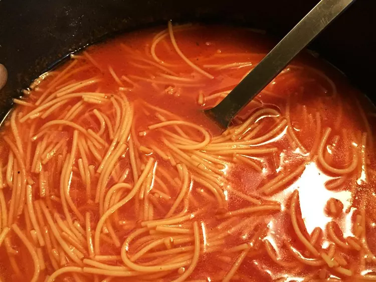

Sopa de Fideos

Description
This sopa de fideos recipe is my version of the tomato noodle soup they give you
in Mexican restaurants before the meal. This can easily be made at home with just
a few simple ingredients.
Ingredients
- 1 (14.5 ounce) can diced tomatoes
- 1 small onion, chopped
- 1 large clove garlic, coarsely chopped
- 2 tablespoons olive oil
- 1 (7 ounce) package fideo pasta, uncooked
- 3 (14.5 ounce) cans chicken broth
- coarse salt and freshly ground black pepper to taste
- 1 tablespoon chopped fresh cilantro
Steps
- Place tomatoes, onion, and garlic into a blender; pulse several times to get the
mixture moving, then blend until smooth, 30 seconds to 1 minute.
- Heat olive oil in a skillet over medium-low heat; stir in fideo pasta. Fry pasta
gently, stirring often, until golden brown, 2 to 5 minutes. Remove from heat.
- Pour tomato mixture into a large saucepan; stir in chicken broth and noodles.
Bring to a boil, then reduce heat to medium-low and simmer until noodles are tender,
7 to 8 minutes.
- Season with salt and pepper; stir in cilantro and cook until warmed through.